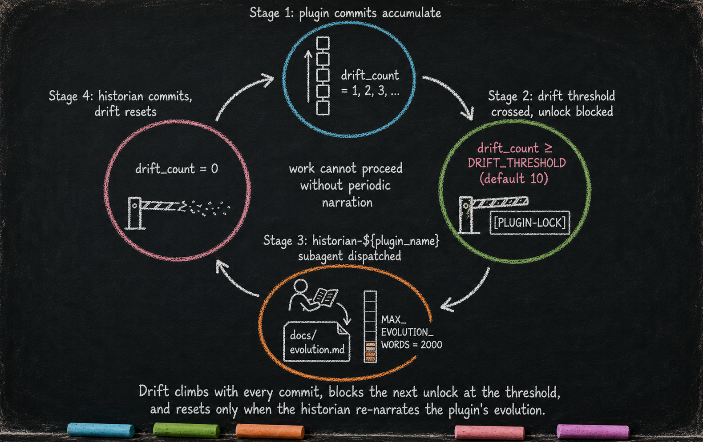

The Always-On Digital Cortex
Essay 5 of 8 in the Hadosh Academy series on agent architecture. Part 2 — the technical arc — opens here.
Now we open .claude/.
In Essay 2, we argued the LLM is the token generator and the agent is everything we build around it — the system that metabolizes those generated tokens into durable forms of memory so the seed agent can form a coherent, stable identity across sessions. Inside .claude/ is where that metabolism happens. Each subdirectory preserves the tokens in a different form: knowledge/ holds long-term memory the agent reaches for during active recall; plugins/ holds procedural memory — the hooks, scripts, and tests that enact discipline rather than describe it. Other compartments carry their own forms — auto-recall coaching in each plugin’s voice.xml, narrative memory in each plugin’s evolution.md, cross-session preferences in memory/. The chat session is the one place memory does not live by design: chat context is capped by the model’s window and survives compaction only as a lossy summary. The rest of .claude/ is what makes the agent durable.
Long before the model runs out of room, the seed agent forces a self-compaction — the conversation is summarized, most discarded, the rest rebuilt from a smaller context. The plugin that runs this — brain_guard — gets its own deep-dive below. The files inside .claude/ sit on disk, untouched; they are still there when the new context starts.ⓘ
In the interlude, I claimed any folder with a .claude/ becomes a seed agent — brain inside, work in siblings. The brain has many forms of memory and many plugins.
One memory form is load-bearing for what follows: the seed agent’s working memory — what it is currently doing or experiencing — lives in a hierarchy of plain Markdown files (CLAUDE.md files) at known locations on disk. The seed agent’s two plugin layers run on top of this hierarchy; the phasic layer writes each cycle’s experiential data into it.
The seed agent organizes those forms of memory through plugins — directories under .claude/plugins/ that bundle the logic and state for one concern. Essay 4 introduced the vocabulary — hook, plugin, voice, agent — that this essay turns into a concrete file layout you can navigate. The plugins split into two categories. The always-on plugins are active all the time, shaping how the seed agent operates no matter what it is currently doing. The phasic plugins manage what we will call the markov brain — they actively control the seed agent’s behavior while it is operating inside a particular phase. We open the markov brain in Essay 6.
Two Categories, One Substrate
The always-on layer is active all the time and runs on every prompt, every tool call, every session start, regardless of which job the seed agent is currently working on. This layer owns infrastructure: locking plugins for updates, context budgets, job structure, conversation discipline. The current prototype ships five always-on plugins (plugin_integrity, brain_guard, job_core, interaction_summary, question_discipline). The category is the load-bearing thing — not the count. A custom seed could add a sixth or a seventh and the architecture wouldn’t shift.ⓘ
That’s one layer. The other rotates.
The phasic layer activates one plugin at a time, dictated by which phase the active job is in. It currently implements a cognitive cycle called OPEVC — observe, plan, execute, verify, condense (five phases in the prototype) — plus an orchestrator (phasic_system) that tracks where each job sits in that cycle. The cycle can be extended as users customize their seed agent and grow its markov brain. Each phase makes a different set of tools available to the seed agent: OBSERVE and PLAN are read-only against project files, EXECUTE writes inside a fenced scope, VERIFY runs scripts only, and CONDENSE writes inside .claude/ only, absorbing the recent experiential data from previous phases. We open the phasic layer in Essay 6.
Two layers. One substrate underneath.
Underneath both layers sits the substrate the previous section listed. The difference between the two layers is not their relationship to it — that varies plugin by plugin — but their relationship to phase. The always-on layer runs continuously, each plugin owning its own concern (plugin edit safety, context window discipline, job lifecycle, interaction legibility, structured questioning), each with its own state, each touching (or not touching) the hierarchy in its own way. The phasic layer activates one plugin at a time, dictated by the active job’s current phase, and it is the layer that uses the hierarchy as its working medium — writing into footers during each cycle, then absorbing the durable parts upward into bodies, sideways into knowledge files, and into voice files, subagent definitions, and other forms of memory at the end.ⓘ
![Chalk-on-blackboard cross-section with three horizontal bands on dark slate. Top band labeled 'always-on plugins' holds five pastel cells: plugin_integrity (cyan), brain_guard (green), job_core (orange), interaction_summary (pink), question_discipline (magenta). Middle band labeled 'phasic plugins (OPEVC orchestrator + 5 phase plugins)' holds six cells with EXECUTE highlighted as currently active. Bottom band labeled 'CLAUDE.md hierarchy + .claude/ brain' shows a small chalk file-tree. Two bidirectional arrows link the middle and bottom bands: 'writes into' (down) and 'absorbs from' (up).](../assets/images/blog/always-on-plugins-b5-1.png)
Why “Single Concern” Matters
Each always-on plugin owns exactly one thing.ⓘ
plugin_integrity owns plugin edit safety. brain_guard owns self-compaction. job_core owns the job lifecycle. interaction_summary keeps a focused job’s mega-prompt legible as it grows. question_discipline owns the asking gate. Each plugin lives in its own folder under .claude/plugins/<name>/ with its own hooks, scripts, hidden state, tests, and voice files. Naming the concern is easy because each plugin only has one to name.ⓘ
The single-concern principle is a minimize rule, not an eliminate rule. Pure isolation is what a traditional library aims for — clean modules with no shared state, talking to nothing they don’t import. The seed agent is a complex cognitive system, and a small amount of structured coupling between plugins is what lets the parts compose into ceremonies larger than any one plugin. Call this single-concern + careful coupling: each part stays narrow; the composition is what makes the ceremony possible.ⓘ
The historian ratchet inside plugin_integrity is a clean example — it blocks plugin editing when the plugin’s evolution narrative has fallen behind, and to do that it depends on question_discipline registering the [PLUGIN-LOCK] prefix, on job_core capturing the user’s approval answer, and on the safe-lock cycle protecting the plugin during the edit. Three plugins compose into one ceremony, each contributing what it owns. We come back to this composition at the end of the essay.
The discipline is in how the coupling happens. When plugins talk to each other, they talk through public, stable interfaces — small command-line surfaces each plugin publishes (one read-only command per concern, job.sh focused being the canonical example), a registry of question prefixes, named voice handles, and the footer marker protocol that organizes the bus. A plugin reads what another plugin chooses to publish; it never reaches into another plugin’s private state. Each plugin’s internal data stays private; only the interface is shared.ⓘ
The shape buys three concrete things. Plugins evolve independently — a change inside interaction_summary cannot break job_core as long as the read-only job.sh API stays the same. Plugins are testable in isolation — each tests/ directory exercises one plugin’s behavior without standing up the entire seed. Plugins are addable — a sixth always-on plugin slots into the architecture by exposing its own public commands, not by rewiring anyone else’s.ⓘ
The Always-On Plugins
Below is the current prototype’s always-on layer. For each plugin: what it owns, what would break without it, and how it works.
plugin_integrity — exists to prevent accidental edits from regressing a plugin’s established logic. It does this by leveraging git checkpoints and the plugin’s own test suite. The lock applies when a plugin’s code files need updating — documentation files inside a plugin (CLAUDE.md and docs/*.md) move under their own rules, with a few caveats.ⓘ
The always-on role to keep in mind here is the test gate: every plugin code change passes through it, regardless of who initiated the edit or which phase the agent is in. When an edit lands inside a plugin and the unlocked state closes, the plugin’s full test suite runs — pass and the change commits, fail and the working tree rolls back to the captured checkpoint with a structured revert entry recorded in the plugin’s hidden state.ⓘ
The fuller ceremony — the [PLUGIN-LOCK] unlock question, the historian ratchet, the documentation-edit caveats, the full lock-cmd flow — is deconstructed in Essay 7.
brain_guard — the always-on plugin that owns the self-compaction we opened the essay with. It works by watching context usage on every tool call and progressively tightening the agent’s grip on tools as the window fills. The whole mechanism fires well before Claude Code’s default auto-compact at 100%, which lets the seed agent operate even when the user is away from the terminal.ⓘ
A pre-call sensor reads the running token count on every tool call. At the first tier (currently around 20% of the window), the plugin injects a coaching voice prompting the agent to draft a structured /compact instruction. The reasoning behind 20%: Opus 4.7’s effective reasoning starts to soften around 30% of a 1M-token window, so acting at 20% leaves headroom. If the agent ignores the prompt, the next tier (around 25%) starts blocking the agent’s read tools. The hardest tier (around 30%) adds the write tools to the block list.ⓘ
The tier positions are tunable; the architectural fact is the progressive tightening. Rather than letting the agent drift toward a hard wall, brain_guard removes one tool at a time until the only graceful move left is to compact.ⓘ

The compaction itself is shape-enforced. The plugin requires the /compact instruction to carry five named sections (Scope reminder, Lessons learned, Verbatim user directives, Recognition moments, Continuation hint) before it is accepted; any instruction missing a section gets blocked until the agent rewrites it.ⓘ
The five sections aren’t gospel. The shape is.
Call this shape compels production: a compartment that demands a structured shape forces the agent to produce content that fits the shape, and the production itself becomes useful context. The agent thinks more carefully about compaction because it has to write under headers.ⓘ
The pattern is portable. Structured git commits, structured plan files, structured subagent dispatches — every time a shape demands content, the content rewards the next step. We will see the same trick land in interaction_summary below.
Mechanically, the /compact self-issue is hacky. A small script injects the instruction into the active terminal — through clipboard-and-keystroke input-injection under X11, or through terminal-multiplexer paste primitives under tmux — because Claude Code does not yet expose an API for an agent to trigger compaction before the 100% auto-compact. The script records the compaction time in the plugin’s hidden state, and the next firing of the tier guards reads that timestamp to grant a brief grace window so the compacted transcript can register before the gate would otherwise re-block. If Claude Code ships a native intermittent self-compact API, this plugin’s terminal-typing layer retires; the rest of the discipline carries forward unchanged.ⓘ
Without brain_guard, the agent runs the conversation off a cliff. The default 100% auto-compact fires eventually, but without the agent’s own plan for what to preserve — and the next session starts from whatever the model happened to have in the window at that moment.ⓘ
job_core — exists to compartmentalize the seed agent’s work. The unit of compartmentalization is the job — a container for everything the agent does between the moment a piece of work begins and the moment it is complete. Every prompt, every reasoning cycle, every action belongs to one. The plugin works by routing each user prompt into a job (creating a new one if none is focused, attaching as an interaction if one is) and by refusing to let the agent stop while any job remains active. It applies on every prompt the user submits, every Stop event the agent triggers, and every [JOB-COMPLETE] claim the agent makes.ⓘ
A user-prompt hook intercepts every user prompt and either creates a new active job or appends the prompt as an interaction on the currently focused one. The interaction field of a job is what the seed agent treats as its dynamic mega-prompt. In most agent designs, “the prompt” is a one-off — text handed to the model at the start of the exchange and rarely revisited. Here, the prompt is cumulative: the first user message in a session seeds a new job, every later prompt and every Q&A appends into the same job’s interaction list, and the whole list is what the agent reads as its instruction set going forward. The next plugin in this layer — interaction_summary — keeps that mega-prompt legible as it grows.ⓘ
The interaction list is just one form of state attached to a job. When a job is created it is assigned a unique ID — a timestamp from the moment of creation — and the base job object (name, status, interaction list, dependencies, completion fields) lives in job_core’s own hidden state. Other plugins that need to carry context about that job extend the same job object under the same ID inside their own hidden state. interaction_summary does exactly this — when a job’s interactions cross the summarization threshold, the plugin creates a mirror entry under the job’s ID and starts appending summary blocks there. The phase plugins (Essay 6) do it on a larger scale: each phase plugin keeps its own per-job bookkeeping — scope multipliers, point ledgers, plan-file pointers, footer markers — keyed by the same ID. No plugin reads another’s hidden state directly, but the shared key lets each plugin’s view of the job line up with every other plugin’s view without runtime coordination. That consistency is what makes the job a true cross-plugin compartment.ⓘ
A turn-end hook refuses to let the agent stop whenever any active or pending job remains. The refusal message is phase-aware — observation phases get reminders to check CLAUDE.md before synthesizing, execution phases get reminders to keep edits inside the altered-list, and so on — and it functions as a re-orientation, not a flat no: when the seed agent tries to stop prematurely, the message reminds it of what its current phase still expects before stopping is even on the table. The agent cannot stop while any job is active, and pending jobs scheduled ahead extend the loop across whatever queue the operator — or the seed agent itself, when it queues follow-up work — has set up. The seed agent runs continuously until every active and pending job has been completed, which is what makes long-running, hands-off operation possible.ⓘ
Completion is staged. The current prototype runs two stages — a pre-call hook validates that any [JOB-COMPLETE] question contains the focused job’s name, runs at least a hundred words of review, and presents exactly the “Review” and “Approve completion” options; then a follow-up post-call hook walks the focused job’s dependency list, refuses approval if any dependency is still unfinished, and only then records the user’s approval. The architectural fact is the staging itself: completion does not collapse into a single moment. Future seed-agent generations can graduate to automated criteria, verifier subagents, or multi-stage approval chains.ⓘ
Without job_core, the agent has no notion of what work am I doing. Every prompt is a one-off, there is no thread of intent to come back to, no place for follow-up work to live, no signal that says the agent is or isn’t done. The cognitive horizon collapses to the current turn — and everything the rest of the always-on layer is built to support has nothing structural to attach to.ⓘ
interaction_summary — exists to keep a job’s dynamic mega-prompt legible as it grows. It works by counting tokens after every user interaction and forcing the agent to draft a structured summary the moment the unsummarized portion crosses a threshold. It applies inside any job whose interaction list grows long enough to compress — short jobs that never cross the threshold never see the plugin engage.ⓘ
Enforcement runs in two phases. A post-call hook fires right after job_core records each interaction, approximates the unsummarized portion in tokens, and trips a flag when the result crosses a threshold. On the next tool call, a pre-call guard blocks every productive tool the agent has — reads, writes, shell calls, even further questions — until a structured summary lands. The submit command refuses just any text: the summary must sit inside a tight word-count band and carry five named sections — User Requests, Questions & Decisions, Design Choices, Corrections & Feedback, Current State — each long enough to actually mean something. The same shape compels production trick brain_guard uses on /compact, applied to a different concern. The block has one deliberate escape hatch — infrastructure-prefixed questions like [PLUGIN-LOCK] and [JOB-COMPLETE] are still allowed, so the agent cannot get into a deadlock where it needs to ask for permission to do the very thing the guard is asking for. The summary chain is append-only and lives entirely in the plugin’s hidden state; older entries cannot be rewritten.ⓘ
Without this plugin, long jobs lose narrative coherence as the interaction list bloats; the summary chain is what keeps a job legible at a glance and what survives forward when the job spans more than one OPEVC cycle.ⓘ
question_discipline — exists to make every question the seed agent asks the user structured. It works by gating every AskUserQuestion call against a small list of registered prefixes — only ceremonial questions (locks, approvals, plan-complete claims) get through. It applies on every AskUserQuestion, with one deliberate runtime exception for dispatched subagents.ⓘ
A pre-call hook walks every question in the call and matches its first token against a small registry of approved prefixes hardcoded in the script. The registry currently holds nine entries — eight name very specific ceremonies (unlocking a plugin, approving a job, approving a plan stage, reporting upstream, and so on), and one ([WAITING]) is the deliberate generic — a catch-all for the cases where the seed agent legitimately needs input from the user and the situation does not fit one of the structured ceremonies. The prefixes cascade: when the agent batches multiple questions in one call, every question must carry a registered prefix, or the entire batch is rejected and the agent has to rewrite. The plugin owns no hidden state; the registry is its only state. Dispatched subagents are flagged as such and bypass the gate so they can ask their own internal questions without the user-facing prefix overhead.ⓘ
Without question_discipline, every AskUserQuestion is fair game — the agent’s asking surface bloats with low-value confirmations, and the structured ceremonies (locks, approvals, plan-complete claims) lose the prefix scaffolding the rest of the always-on layer uses to dispatch on.ⓘ
The CLAUDE.md hierarchy underneath them all is what we open next.
The CLAUDE.md Hierarchy as Information Bus (aka Working Memory)
Drop a file named CLAUDE.md into a project, and the standard Claude Code CLI agent reads it. Drop one into .claude/, and it gets read too. Nest more of them inside subdirectories, and Claude Code surfaces each one when the agent works near it. The shared move: a plain Markdown file at a known location, automatically appended to the model’s context whenever the agent reads or edits files in that directory.ⓘ
Other agentic CLI agents run the same pattern in their own ecosystems — Codex and opencode read AGENTS.md, Gemini CLI reads GEMINI.md. The convention is most obviously useful for code, where each CLAUDE.md doubles as meta-information about how to manage future edits — and most agentic CLI agents were originally built for software work.ⓘ
But as the first essay argued, the CLI form factor extends far beyond writing code — to any work whose product lives in files: research, legal analysis, business operations, consulting work, and beyond.ⓘ
The native loading is layered. The Claude Code memory documentation recognizes two locations for project-level instructions — ./CLAUDE.md and ./.claude/CLAUDE.md — and both load at session start. The seed agent uses both: a high-level CLAUDE.md at the workspace root for identity and operating rules, and a brain index inside .claude/ cataloging plugins and active jobs. Run /memory inside Claude Code and you will see them both listed alongside any user-level CLAUDE.md files. After a /compact, Claude re-reads the project-root file from disk and re-injects it. Every other CLAUDE.md further down the tree loads on demand: per the docs, “they are included when Claude reads files in those subdirectories.”ⓘ
Every Claude Code user gets this primitive for free. What the seed agent does on top is partition each CLAUDE.md into compartments.ⓘ
The body of the file — everything above the four anchors below — keeps the standard Claude Code semantics: identity, rules, structure, the things the agent should remember about this directory at all times. Below the body, every CLAUDE.md inside the seed agent’s brain carries four anchored sections:ⓘ
---Ob---
(observation content goes here)
---Pl---
(plan content goes here)
---Ex---
(execution content goes here)
---Ve---
(verification content goes here)Each footer section corresponds to one phase of the OPEVC cycle. The guard hooks inside each phase plugin enforce a single rule: a phase cannot edit above its own anchor. During OBSERVE, the agent can write into ---Ob--- and into any of the three sections below it. During PLAN, into ---Pl--- and below. During EXECUTE, into ---Ex--- and ---Ve---. During VERIFY, only into ---Ve---. The body — everything above the first anchor — is off-limits to all four phases. Only the CONDENSE phase is allowed to absorb content upward into the body, and only when closing the cycle.ⓘ
The asymmetry is intentional. Earlier phases can leave forward-looking notes for later phases — OBSERVE can sketch an early plan or seed a verify checklist if it spots one; PLAN can pre-stage verification criteria for the work it is about to dispatch — but no phase can rewrite what an earlier phase has already committed. Information flows downward through the cycle. The full per-phase semantics — what each phase is encouraged to write where, how subagents feed OBSERVE from the knowledge directory, and how all four phases can drop prefixed markers for CONDENSE to consume — is the subject of Essay 6. For now, the load-bearing fact is that the footer is a structured, append-forward, multi-author region.ⓘ
The footers are why the seed agent does not need to rely on the chat to hold its working memory. As a job moves through OBSERVE → PLAN → EXECUTE → VERIFY, each phase writes its experiential output — what was gathered, what was decided, what was built, what was checked — into its own footer slot in whichever CLAUDE.md is closest to where the work is happening. The footers inflate across the cycle. By the time the job reaches the end of VERIFY, the four sections together can hold thousands of words of fresh, cycle-specific memory.ⓘ
CONDENSE deflates them. CONDENSE is the cognitive organ that closes each OPEVC cycle — its waterfall pulls durable findings from the four footer sections up into the body of the same CLAUDE.md (so they survive the next cycle), routes topic-specific knowledge into .claude/knowledge/, and migrates anything that belongs higher up the tree into a parent CLAUDE.md or into the root brain. When CONDENSE finishes, the footers are empty again. The next cycle of OPEVC starts with a clean working memory and a slightly enriched body. The hierarchy as a whole grows smarter with each pass.ⓘ
![Chalk-on-blackboard five-panel sequence showing the same CLAUDE.md file across the OPEVC cycle. Panels labeled in pastel chalk: OBSERVE (cyan), PLAN (green), EXECUTE (orange), VERIFY (pink), CONDENSE (magenta). Each panel shows the file divided into a body zone above the four footer markers ---Ob---, ---Pl---, ---Ex---, ---Ve---. The footers fill in sequence across the first four panels, then the CONDENSE panel lifts findings upward into the body and wipes the footers clean. A side-branch peels off to '.claude/knowledge/'. A curving arrow loops back to OBSERVE labeled 'next cycle'.](../assets/images/blog/claude-md-anchors-b5-3.png)
There is a second consequence of CLAUDE.md edits during a cycle, and it is what gives the bus teeth. EXECUTE — the only phase that may touch project files outside .claude/ — is fenced to the altered list: the set of directories whose CLAUDE.md the agent edited during OBSERVE or PLAN. EXECUTE inherits the list and may only modify files inside those directories. If a directory’s CLAUDE.md was never touched during the read-only phases, EXECUTE cannot make project changes there in this cycle, however clearly the work seems to call for them.ⓘ
The bus is not only where the agent stores experiential notes — it is where the agent declares the work it intends to do. Editing a CLAUDE.md during OBSERVE or PLAN is a commitment that scopes what EXECUTE will be allowed to attempt. The deeper mechanics — how the altered list is checked, what file types EXECUTE may write inside an altered-list directory, how multi-commit checkpoints land — are the subject of Essay 6. For the bus story, the structural fact is enough: CLAUDE.md edits gate execution.ⓘ
The seed agent’s bus is not one CLAUDE.md. It is a hierarchy.
hadosh_academy/
├── CLAUDE.md ← root brain
├── .claude/
│ ├── CLAUDE.md ← brain index
│ ├── plugins/
│ │ ├── plugin_integrity/CLAUDE.md ← plugin brain
│ │ ├── brain_guard/CLAUDE.md ← plugin brain
│ │ └── ... ← one per plugin
│ └── knowledge/
│ ├── plugin_integrity/ ← durable, per-topic
│ ├── brain_guard/
│ └── ...
└── hadi-nayebi.github.io/
└── CLAUDE.md ← project working memoryEach layer plays a different role on the bus.
The root CLAUDE.md declares the agent’s identity and operating rules — what phases exist, what the size limits are, how the brain is allowed to grow. It is the top of the bus, and one of the two project-level CLAUDE.md files Claude Code loads at session start.ⓘ
The brain index at .claude/CLAUDE.md is the other one. It catalogs the plugins, points to the knowledge directory, and records the brain-maturation lessons accumulated across cycles.ⓘ
The plugin CLAUDE.md files declare what each plugin owns. They are how a plugin tells the rest of the system “I am responsible for X, here is how I work, here are my tests, here is my current version.” When a plugin is being edited, that plugin’s CLAUDE.md is the agent’s working memory for the edit, and its footer is where the cycle’s experiential data accumulates until CONDENSE absorbs it.ⓘ
The working-directory CLAUDE.md files are local. The website project has one. So does the blog folder. So does — when work is happening there — any directory deep in the tree where the focus currently sits. These are the files whose footers most often inflate during the OPEVC cycle and deflate during CONDENSE.ⓘ
The knowledge directory is the durable layer. When something has been learned that is worth keeping past the current cycle, CONDENSE routes it into .claude/knowledge/<topic>/ as a real Markdown file with its own structure. The current prototype carries one topic silo per major plugin (brain_guard/, phase_observe/, phase_condense/, and so on) plus a cross-cutting opevc/ directory that holds dozens of operational recipes mined from cycles across the system. Each topic dir tends to grow an INDEX.md plus a handful of focused topic files, refined cycle after cycle. OBSERVE phases recall from the directory; CONDENSE phases extend it; subagents are dispatched against it for parallel research. Knowledge files are how the agent remembers things across sessions, across cycles, across months.ⓘ
Memory files sit a layer beyond that — cross-session preferences and feedback that should outlive any individual project. This layer is managed by Claude Code itself, not by the seed agent: the CLI maintains them in the user’s home directory under ~/.claude/projects/<encoded-path>/memory/, with a small MEMORY.md index loaded on every session start. Each entry is a typed file (feedback_*.md, user_*.md, project_*.md, reference_*.md) the agent can grep by category when a session starts cold. The current seed-agent prototype does not extend this layer — it inherits Claude Code’s native memory behavior unmodified. A future plugin could hook into it deliberately, using the entries as a source of context injections at session start, but no such plugin exists yet.ⓘ
Every always-on plugin keeps its own state in hidden files inside its plugin directory — files the seed agent itself cannot read or edit directly. Every state mutation goes through a plugin-owned script. Some of that script’s commands are public, callable as part of the agent’s workflow (job.sh focused is a typical example); others are flagged as internal-only and restricted to other scripts and hooks within the seed, so the agent cannot reach them at all. None of these plugins treat CLAUDE.md as their primary state surface. The relationship to the hierarchy varies plugin by plugin — plugin_integrity polices the four phase markers from removal but otherwise leaves CLAUDE.md content free to edit, while the others are mostly orthogonal, owning concerns (context budget, job lifecycle, interaction summarization, question discipline) that live in their own data files.ⓘ
The phasic plugins generate the bus’s content. The choreography of how each phase writes its footer and how CONDENSE absorbs them is the subject of Essay 6.ⓘ
The relationship is asymmetric. The phasic layer is the system that actively uses the hierarchy — its phases write into footers during the cycle, and CONDENSE absorbs the durable parts upward into bodies, sideways into knowledge files, and into voice files, subagent definitions, and the brain’s own operations, at cycle close. The always-on layer mostly does not — each of its plugins runs its own concern through its own state, with at most narrow points of contact (plugin_integrity guards the phase markers; the rest are orthogonal). In the current prototype, well over a hundred CLAUDE.md files across the brain and the project carry the four phase footers. The footer convention is the protocol — and the phasic layer is what writes through it.ⓘ
This is the bus.
In Essay 1, I claimed that the agent is the filesystem. This is what that meant, mechanically. The filesystem is not a passive store. It is an active hierarchy, with rules about what reads where and what writes where, with phases that inflate and condense it across a cognitive cycle. The always-on layer runs alongside that — phase-independent, each plugin minding its own concern regardless of where the cycle is.ⓘ
The Historian Ratchet
For the architects in the audience: the historian ratchet we sketched earlier is worth examining in detail, because it captures the discipline of the whole always-on layer.ⓘ
Every plugin has a file called evolution.md. It is a word-capped narrative (currently 2000 words) of how the plugin got to its current state — what was added, what was rejected, what was learned during which cycle. It is auto-injected into the agent’s context whenever the plugin is unlocked for editing. Think of it as the per-plugin counterpart to interaction_summary’s durable conversation memory. interaction_summary carries the summary of the user-agent conversation across compactions; evolution.md carries the summary of the plugin’s own life across cycles. Where git log keeps the mechanical record, evolution.md keeps the narrative one.ⓘ
The naive version of this would be: “documentation that updates itself when the plugin changes.”
The seed agent’s version is sharper.
When the agent attempts to unlock a plugin for editing — by issuing a question with the prefix [PLUGIN-LOCK] <plugin_name> — the lock manager runs a small drift-check against the target plugin. The check is a single git command that counts how many commits have touched the plugin since the last time its evolution narrative was synced. The result is the drift count: the number of commits the plugin has accumulated since its history was last narrated. If that count meets or exceeds a configurable threshold (default ten), the unlock is blocked and the agent is told to dispatch the plugin’s historian subagent first.ⓘ
Each plugin has its own dedicated historian — historian-brain-guard, historian-phasic-system, historian-job-core, and so on (thirteen in the prototype, twelve of which live centrally inside plugin_integrity’s own folder, with historian-question-discipline living alongside its own plugin) — so the narrative voice for each plugin stays consistent across its lifetime. The template that new plugins clone from when they are born lives in plugin_integrity/template/_historian.md. When dispatched, the plugin’s historian reads the drift log, synthesizes what changed since the last sync, and edits evolution.md under a 2000-word cap enforced by a dedicated hook that blocks any edit which would push the file past the cap. When the cap fires, the block does more than refuse — it coaches the historian to retry with a tighter narrative and to migrate any overflow into sibling documents (per-cycle deep-dives, a decisions log, technical appendices), with evolution.md becoming an executive summary that references those siblings rather than absorbing them. The historian’s last mandatory step is to commit. That commit touches evolution.md, which becomes the new sync point, which means the drift counter resets to zero — and the next set of edits will eventually push it back up, and the cycle repeats.ⓘ
This is the ratchet pattern. A plugin cannot be edited indefinitely without periodically forcing the historian to re-narrate its evolution. Three mechanisms enforce it together: the drift counter that measures elapsed commits, the block that refuses unlock at the threshold, and the historian’s own commit that resets the counter — without that reset, the next [PLUGIN-LOCK] deadlocks.ⓘ
The pattern is portable. Anywhere a system needs to enforce a discipline-that-must-be-done-eventually, the same shape works: a counter that climbs with normal work, a block that fires when the counter crosses a threshold, and a corrective action whose own completion resets the counter. The discipline becomes mechanically inescapable.
The lesson is small: read the work before changing it.
The mechanism makes the lesson non-negotiable. The agent is not suggested to re-read the plugin’s history before editing — a suggestion would be ignored under deadline pressure. The lock blocks. The historian runs. Only then can the work proceed.

= DRIFT_THRESHOLD (default 10), [PLUGIN-LOCK] blocked by a chalk barrier. Stage 3 (orange, bottom): historian-${plugin_name} subagent dispatched, writes into docs/evolution.md under a vertical fill-bar marked MAX_EVOLUTION_WORDS = 2000. Stage 4 (pink, left): historian commits, drift_count = 0, barrier dissolves. Center caption reads 'work cannot proceed without periodic narration'." loading="lazy">The ratchet looks like one mechanism, but it is actually three plugins working together. Recall the three-plugin sketch from earlier — here it is in full.
The agent must be able to ask a [PLUGIN-LOCK] question. That depends on question_discipline recognizing the prefix and letting the question through; without that registration, the call is blocked before the user even sees it. The user’s answer must then be captured and routed to the lock manager. That depends on job_core’s split pre-call/post-call pair, which validates the question, captures the approval, and hands the result over. Finally, the edit must close cleanly under test. That depends on plugin_integrity’s own safe-lock cycle, which runs the plugin’s test suite when the lock closes and reverts the working tree if the tests fail.ⓘ
No single plugin enforces the historian ratchet. Three plugins compose to make it possible — question_discipline opens the asking surface, job_core carries the answer, plugin_integrity protects the edit. Each plugin owns its own narrow concern. The ceremony emerges from the way they fit together. Essay 7 takes plugin_integrity apart on its own terms — the lock-and-historian ceremony as a single plugin’s anatomy.ⓘ
![Chalk-on-blackboard composition diagram on dark slate. Three pastel tiles side by side. Tile 1 (cyan): 'question_discipline' with a [PLUGIN-LOCK] tag passing through a chalk gate, captioned 'opens the asking surface'. Tile 2 (green): 'job_core' with a Q&A pair captured into a 'job' container, captioned 'carries the answer'. Tile 3 (orange): 'plugin_integrity' with a chalk shield around a 'plugins/<name>/' folder and a 'git checkpoint' marker, captioned 'protects the edit'. Above them, a curving arc labeled 'historian ratchet ceremony' links them; below, a horizontal slab labeled 'shared substrate: CLAUDE.md hierarchy + plugin data.json files'.](../assets/images/blog/historian-ratchet-b5-5.png)
Call this composed ceremony: narrow parts, structured interfaces, emergent rituals — the same shape as the /compact five-section template, the same shape as the ratchet itself. Narrow constraints composing into behaviors larger than any single constraint.ⓘ
The always-on layer is not a stack of independent guardrails sitting in parallel. It is a small, deliberate ring of single-concern guardrails composing into ceremonies none of them could enforce alone.ⓘ
That’s the always-on layer in microcosm. Each plugin a small lesson. Each lesson backed by mechanical enforcement. Discipline the filesystem itself preserves.
The Bus Is Just Substrate
The bus we built up across the CLAUDE.md hierarchy is substrate. The hierarchy itself, the always-on layer, the durable knowledge directory — together they form the digital cortex the seed agent rests on. They keep state, enforce work structure, and discipline conversation, all without doing any of the actual cognitive work.ⓘ
The actual work happens in the phasic layer. Five phases. One cognitive organ called CONDENSE. Tools forbidden in each phase that force the agent to think before acting.ⓘ
But a bus is just substrate. What USES it intelligently — that’s the phasic brain.
Next.
Essay 5 of 8 in the Hadosh Academy series on agent architecture.
Previous: “The Folder Is Alive” — .claude/ turns any folder into an agent; cognitive metabolism brings it to life.
Next: “The Markov Phasic Brain” — five phases, one cognitive organ, and why forbidding tools is the pedagogy.
Comments